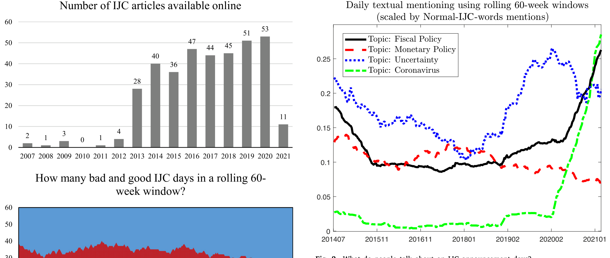
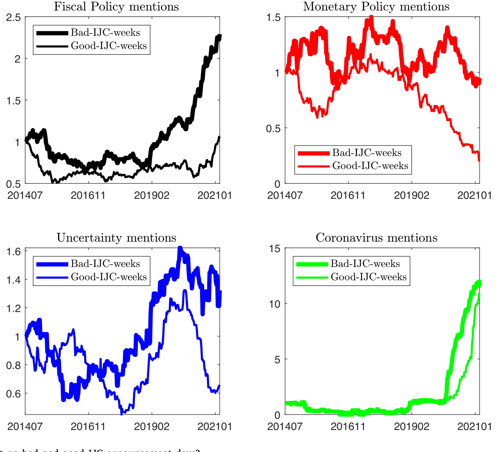
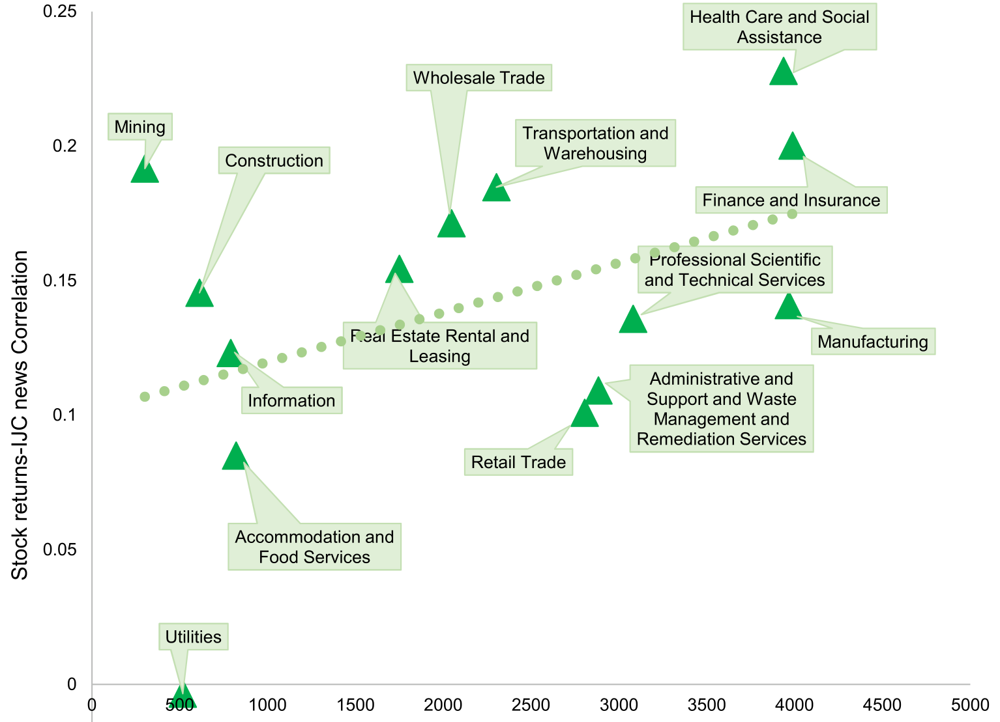
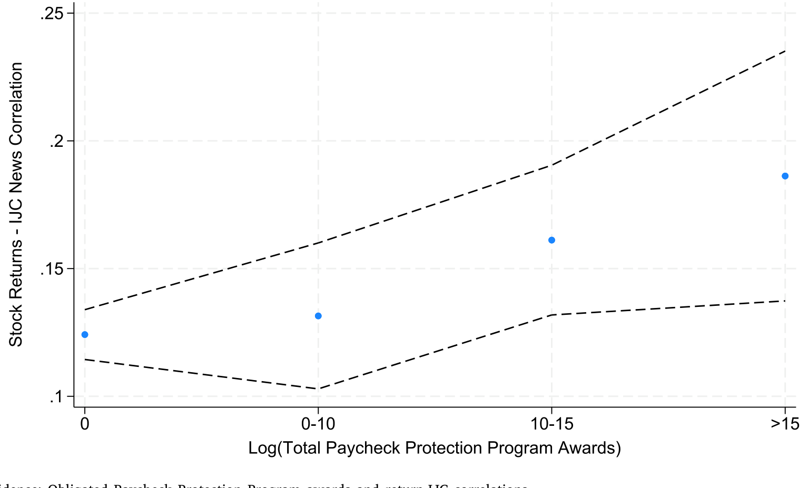
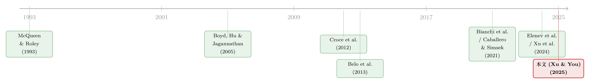

坏消息，为什么成了华尔街的好消息？——财政预期如何重写了「靠失业数据炒股」的逻辑
本文读的是 Xu & You (2025, Journal of Financial Economics)：当「主街」（Main Street）的就业坏消息超预期到来时，投资者会预期政府将出手撒钱，于是把这份「财政预期」提前贴现进股价——结果是初请失业金（IJC）数据越糟，大盘当天反而越涨。作者用 CNBC 的逐周新闻文本给这份预期「签了名」，又用 PPP 拨款和政府采购合同在横截面上验证：越是预期能拿到财政补贴的公司，坏消息日的股票越「逆势」。
1 引言：一条被「读反」的新闻
先看一条 2021 年 2 月 18 日早上 8:40 路透社的快讯：
上周首次申领失业救济的美国人数意外上升……来自劳工部周四的这份每周失业数据，是反映经济健康状况最及时的指标，它可能会为拜登总统推动的 1.9 万亿美元纾困方案再添一把火。
请注意这条新闻的内在张力。前半句是个不折不扣的坏消息——失业人数「意外上升」；可后半句话锋一转，落点却落在「1.9 万亿美元」这个数字上。换句话说，记者在报道一个糟糕的劳动力市场时，脑子里想的其实是另一件事：坏到这个份上，国会该掏钱了。
这正是本文的全部故事：一份本应让人忧心的宏观坏消息，是怎样在投资者的脑子里，被悄悄翻译成一笔即将到账的财政红包的？
按教科书的资产定价范式，坏的宏观消息应当压低未来现金流预期、推高风险溢价，于是股价应该跌——「bad is bad」。但 Xu 和 You 发现，在 2020 年前后那段特殊的、低利率叠加危机的时期里，这条逻辑被整个翻转了过来：初请失业金（initial jobless claims, IJC）数据越是超预期地差，标普当天反而越涨。主街的痛，成了华尔街的赚——这就是论文标题的来历。
「Main Street」指普通人的实体经济（就业、工资、小企业），「Wall Street」指金融市场。论文的核心观察，就是这两者在 2020 年出现了一次系统性的「脱节」（disconnect）。
2 一个老问题，和一个新答案
「坏消息为什么是好消息」并不是个新问题。
首先，要承认它早有人问过。Boyd, Hu and Jagannathan (2005) 那篇经典就叫《股市对失业消息的反应：为什么坏消息通常对股票是好事》。他们的解释偏向货币政策与商业周期：失业上升，市场预期央行会降息、贴现率会下降，于是股价上涨。McQueen and Roley (1993)、Andersen et al. (2007) 则强调「商业周期」这条线——在经济收缩期，同样一份宏观冲击会被定价得更重。这一脉的共同点是：把「坏消息变好消息」的开关，按在了利率/货币政策上。
接着，一个自然的问题是：如果不是货币政策呢？毕竟 2020 年那场危机里，美联储几乎在 4 月之前就把常规和非常规的弹药全打光了，利率贴到地板上，货币政策这条管子的边际空间已经很小。可股市对失业数据的「逆向反应」恰恰在这之后变得最强。那么，是谁在接棒？
本文给出的新答案是：财政预期（fiscal policy expectations）。在一个低利率、危机化的环境里，当主街的痛超出预期，投资者真正在心里盘算的，不是美联储还能降几个基点，而是华盛顿这一次会不会掏出一份更慷慨的财政纾困——而政府撒下去的钱，会变成企业未来现金流的增长。于是坏消息通过「预期现金流增长」这条通道（the expected cash flow channel），把股价推了上去。
这是一个「政府看跌期权」（Government Put）的故事：和大家熟悉的「美联储看跌期权」（Fed Put）平行——市场越糟，投资者越相信政府会托底，只不过这一次托底的工具从货币换成了财政。
但财政预期有个天然的麻烦：它没法被直接观测。利率有期货、有 OIS，货币政策预期可以用市场价格反推；可「投资者觉得国会会不会通过纾困案」这种高频信念，既没有期货市场、也没有逐日的调查问卷。真正关键的一步在于：怎么把这份看不见的预期「签出名字」来？
3 识别策略：用报纸给「预期」签名
作者的办法，是去读新闻。
3.1 把 IJC 冲击量化
先把「坏消息有多坏」量化。初请失业金每周四上午 8:30（美东时间）公布，作者把 IJC 冲击定义为实际值相对市场预期的百分比偏离：
这里有两个工程上的讲究。其一，用百分比而非水平差 \(IJC_t - E_{t-\Delta}(IJC_t)\)，是因为 2020 年 3—4 月初请人数有一个量级上的结构性断裂（structural break），水平差会被这几周彻底带偏；用百分比才能让整段样本的时间序列「稳态」可比。其二，作者剔除了与 FOMC 会议或其他重大宏观公布日重叠的日子，又用箱线图的 1.5 倍四分位距规则剔除了三个极端离群点：2020/3/19（冲击 27.7%）、3/26（92.9%）、4/2（76.9%）——那几周的失业数字大到任何回归都会被它们绑架。
3.2 读 366 篇 CNBC 文章
真正巧妙的，是「签名」这一步。CNBC 有一个专门的初请失业金页面，每个周四上午由记者团队为当天的 IJC 公布写一篇解读文章。作者手工抓取了能找到的全部文章，一共 366 篇，时间稳定覆盖 2013 年 1 月到 2021 年 3 月（这也是为什么样本从 2013 年起步）。每篇平均只有 327 个词，很短，所以作者按「周组」来构造指标。
然后，用「词频-逆文档频率」（term frequency–inverse document frequency, TF-IDF）给五个话题打分：财政政策（FP）、货币政策（MP）、经济不确定性（UNC）、新冠相关（COVID），以及描述失业本身的常规词（NORMAL，用作标尺与验证）。这里有个容易被忽略的细节：教科书里的「fiscal policy」「tax」这种正经术语，在失业新闻里几乎不出现；真正承载财政讨论的，是「aid」「extend」「benefit」「Congress」「lawmaker」「federal government」这类词。作者据此自建了一套能捕捉「政府要花钱了」语气的词表——这一步的手艺，决定了整篇文章的成败。
用报纸文本去量化一个看不见的宏观变量，并不是头一回。把媒体语言「数」成不确定性指数的做法，可参见 Baker et al. (2016) 的经济政策不确定性（EPU）指数（关于这条文本路线，亦可参见《报纸是怎么「数」出股市恐慌的：把波动拆成四十个抽屉》）。本文的不同在于：它要数的不是「恐慌」，而是「撒钱的预期」。
3.3 两个风格化事实
把这些话题提及画成滚动 60 周的时间序列，两个事实跳了出来。
第一，财政话题的提及在 2013—2014 年政府停摆辩论时期就有一波（指标确实捕捉到了），又在 2017—2018 年那场造成约 2950 亿美元损失的大西洋飓风季、2019 年又一次停摆讨论时抬头；而真正的爆发是 2020 年 4 月之后——FP 提及一路升到前所未有的高度。从样本头到样本尾，FP 提及上升了 57%（p 值 0.002），并显著超过了货币政策提及；与此同时 MP 提及反而下降了 49.0%（p 值 0.000）。

Figure 2: What do people talk about on IJC announcement days?
第二，也是更要害的——把同一个 60 周窗口里「坏 IJC 日」和「好 IJC 日」的文章拆开看，财政提及在坏消息日显著高于好消息日（p 值 0.011）。这正是把投资者预期「签了名」：FP 的预期，恰恰在坏消息来临时被激活，而且是朝着「更扩张」的方向。反过来，货币政策提及更多地出现在好消息日，且与未来利率预期的季度修正（来自专业预测者调查 SPF）正相关 0.46——好消息日，投资者想的是「该加息了」。

Figure 3: What do people talk about on bad and good IJC announcement days?
于是反转的逻辑被讲清楚了：坏消息 → 激活扩张性财政预期 → 推高现金流预期 → 股价上涨；好消息 → 激活紧缩性货币预期 → 压低估值。一份失业数据，在两种情境下被两套预期分别接管。
4 主要结果（一）：时间序列上的「反转」
有了「签名」，时间序列检验就直接了。
作者把 IJC 冲击与时变的话题提及交互，看股票回报对坏消息的反应是否随财政提及的高低而变化。结论非常干脆：
- 在 2013—2021 全样本里，当财政提及比均值高 1 个标准差时，由
0.1单位坏 IJC 冲击引起的股票回报反应，要高出24—30个基点；这一结果在同时控制货币政策提及与不确定性提及后依然稳健。 - 在 2020 年 2 月到 2021 年 3 月这个财政提及空前高涨的子样本里，整个符号被掀翻了：IJC 冲击每上升 1 个标准差，当日开盘到收盘的大盘指数回报显著上升约
30个基点——「bad is bad」的范式定价被直接推翻。
而且这股力量只来自现金流通道、只出现在坏 IJC 日。对称地，好 IJC 冲击的回报反应与财政预期无关，而与货币政策预期挂钩——这一点和 Boyd et al. (2005) 的猜想、以及 Elenev et al. (2024) 的实证一致：在低利率环境里，利率本就只有向上的空间，好消息才更可能触发「要加息」的联想。
这里要小心因果的方向。作者并不是说「失业上升导致股价上涨」，而是说：在财政被全民热议、且投资者相信政府会托底的时期里，坏消息被重新定价了。换句话说，财政提及是一个「调节变量」（moderator），而不是结果。识别的可信度，因此高度依赖于「FP 提及」是否真的度量了财政预期，而非别的什么东西。
5 主要结果（二）：横截面——谁拿到钱，谁就更「逆势」
时间序列再漂亮，也只是一根总量曲线。真正能把机制钉死的，是横截面：如果故事成立，那么越是预期能从政府拿到钱的公司，它的股票在坏 IJC 日就该越「逆势」上涨。作者为此造了三套互相印证的横截面证据，外加一套 2020 年前的「安慰剂」式推广。
第一套，读法案。 投资者怎么判断某个行业会不会受到财政眷顾？一个直接的渠道是看法案里点了谁的名。作者用 NAICS 官网的行业关键词，去数主要纾困法案里各行业被提及的密度。结果：在法案中被提及越多的行业，其「回报-IJC 冲击」相关性越高。医疗保健行业（healthcare）拿到了大量财政补贴，其相关性高达 0.228；运输、制造等几个并非危机直接相关、却在法案中被反复提及的行业，也表现出更强的「主街痛、华尔街赚」。

Figure 5: Cross-sectional evidence: Industry keyword mentions in the CARES Act and industry returns-IJC correlations
第二套，查账本。 作者基于财政部 USAspending.gov 的原始数据，构建了一个新数据库，记录联邦政府在各纾困法案下对每一家企业「承诺的」和「实际发放的」资金。三大新冠法案——CARES（2020/3/27）、CAA（2020/12/27）、ARP（2021/3/11）——的拨款大多以薪资保护计划（Paycheck Protection Program, PPP）或其他可豁免贷款的形式发放。结果是：被承诺更多纾困资金的公司，「回报-IJC 冲击」相关性与敏感度都显著更高。尤其关键的是，作者单独只用「承诺的 PPP 拨款」（它与劳动力市场结果有最直接的联系）来做，得到的结果在经济与统计意义上都同样成立。和读法案那套互为印证：医疗与航空运输在早期疫情中获得了最多的财政支持。

Figure 6: Cross-sectional evidence: Obligated Paycheck Protection Program awards and return-IJC correlations
第三套，看基本面。 作者用企业从 2019 到 2020 年初的基本面变化——招聘岗位、雇佣、营收、每股收益——来度量新冠对它的初始冲击，以此推断它「预期能从政府拿到多少钱」。结果在 5% 显著性水平上依然稳健。
第四套，回到 2020 年前。 这一步尤其见功力。横截面证据若只在新冠这段「特殊时期」成立，难免让人担心是不是疫情独有的故事。于是作者把检验推广到 2013—2019 的疫前样本——那时企业层面的政府支出主要不是纾困，而是政府采购合同（procurement contracts）。作者用 USAspending.gov 造了一个细致的政府采购数据集，用企业近期采购义务金额（绝对额，或用近期营收做标准化）作为其未来「财政依赖度」的代理。结论照样成立：在财政被相对热议的时期，越依赖财政支出的公司，对单位坏 IJC 冲击的股票回报反应越高。这一采购口径，也为 Belo et al. (2013) 那套基于国民收入与产出账户（NIPA）的度量，提供了一个更细颗粒度的替代。
至此，机制被讲透了：不是所有公司都在坏消息里上涨，而是那些「站在财政撒钱的下游」的公司在上涨。 横截面的异质性，恰恰是总量「反转」的微观来源。
6 文献脉络
把这篇放回它所在的那条线上看，会更清楚它新在哪里。
最早一脉，是「宏观公布日里股价怎么反应」。McQueen and Roley (1993)、Andersen et al. (2007) 给出了商业周期解释；Boyd et al. (2005) 把「失业坏消息为何常是股票好消息」推到台前，并把开关按在货币政策与商业周期上。这条线一路延伸到 Caballero and Simsek (2021) 对「华尔街/主街脱节」的货币政策式刻画，以及 Elenev et al. (2024) 对好消息—货币预期联系的实证。本文承认了这条线，却在它之外补上了一个被长期忽略的开关：财政预期。

另一脉，是财政政策的资产定价后果。这一脉以 Croce et al. (2012)、Gomes et al. (2013)、Bretscher et al. (2020)、Croce et al. (2021) 等均衡框架下的研究为主，但几乎都聚焦于「实际」财税政策在季度或更低频上的长期价格效应；Belo et al. (2013)、Belo and Yu (2013) 则考察实际政府支出/税收对股票风险溢价横截面的影响。与本文最接近的，是 Bianchi et al. (2021) 用国会议员推特识别法案通过预期对资产价格的影响，以及 Xu et al. (2024) 关于分析师如何形成对采购合同的财政风险认知。理论一侧，Christiano et al. (2011) 与 Bianchi et al. (2023) 都预言：当货币政策不再活跃时，财政对实体经济的效应会强得多——这正好是本文低利率样本的写照。
本文的位置，是把上述两脉接到了一起：它不研究「实际」财政政策的长期效应，而是论证财政预期已经在高频上被资本市场定价了；并用失业新闻这件「主街」事件去给投资者的财政预期「签名」，再用一个低利率样本把货币政策这条干扰管子摁住。
7 评论与延伸（Q&A + 研究方向）
(a) 几个可能的疑问
Q：这跟 Boyd et al. (2005) 的「坏消息是好消息」到底差在哪？
差在「开关」。Boyd et al. 把开关按在货币政策/商业周期上：坏消息→预期降息→股价涨。本文识别出第二个、且独立的开关——财政预期，并通过低利率样本把货币这条通道的边际空间压到很小，再用横截面（谁拿到财政补贴谁就逆势）把财政通道单独「拎」出来。两者不是替代，而是并列。
Q：用 CNBC 文章数 FP 提及，会不会只是「事后诸葛」——记者看到股市涨了才去写财政？
这是最值得担心的内生性。作者的几道防线：一是文章在当天上午发、IJC 上午 8:30 出，时序上先有数据后有文本；二是坏 vs 好消息日的提及差异（p=0.011）是结构性的、不是被当日收益反推的；三是真正压住质疑的是横截面——法案点名、PPP 拨款、采购合同这些都是与「记者怎么写」无关的外生账本，却给出一致结论。文本只是「签名」，不是唯一证据。
Q：为什么非用初请失业金，而不是非农或 CPI？
两个理由。其一，在美国各类宏观公布里，只有 IJC 是周频（每周四 8:30），观测点多得多，时间序列检验才有力量。其二，实时失业数字是不折不扣的「主街」变量，对决定要不要撒钱的政策制定者最直接相关——它最适合用来「给财政预期签名」。
Q：30 个基点的总量效应，是不是几乎全靠 2020 年那几周的极端数据撑起来的？
作者已经剔除了 3/19、3/26、4/2 三个离群点，并用百分比冲击处理了 2020 年的水平断裂。更重要的是，疫前 2013—2019 的采购口径横截面也成立，说明这不是新冠独有的现象，只是新冠把财政预期放大到了肉眼可见。
Q：「政府看跌期权」和「美联储看跌期权」是一回事吗？
平行但不同。两者都是「市场越糟、越相信被托底」的预期定价，但托底工具不同：Fed Put 走利率/贴现率通道，本文的 Government Put 走财政支出/预期现金流通道。本文的贡献，恰恰是在利率几乎触底、Fed Put 弹尽的时候，识别出了后者在独立起作用。
Q：这个机制只在危机+零利率下成立，外推性是不是很弱？
作者很诚实：核心舞台就是低利率、危机化的样本，正是这个环境把货币这条管子摁住、让财政预期凸显出来。疫前采购口径的稳健性提供了一定的外部效度，但「利率正常化之后这套逻辑还剩多少」确实是开放问题——这也正是后续最该追的方向。
(b) 几个可能的研究问题与提案
1. 财政预期会不会也定价了公司债的信用利差？
【经济故事】如果投资者相信政府会给某些行业撒钱，那受益企业的违约风险（尤其是疫情中靠 PPP/可豁免贷款续命的中小企业）应当下降，信用利差应当在坏 IJC 日收窄——而且债市对「现金流托底」的敏感度可能比股市更直接。 【可行性】高。把本文的 PPP/采购「财政依赖度」横截面，接到 TRACE 的公司债日内利差变化上即可，识别策略可平移。难点是中小受益企业多为非上市、债券流动性差，样本会偏向大发行人。
2. 外资持有人会不会「读不懂」这份本土财政预期？
【经济故事】财政预期是高度本土化的政治信号（国会辩论、法案点名）。如果坏 IJC 日的逆向上涨主要由理解美国政治的本土投资者驱动，那外资重仓的股票其逆向反应应当更弱，甚至外资可能在坏消息日净卖出——这是一道关于「谁在为政府看跌期权定价」的投资者结构题。 【可行性】中。需要 13F/国际资金流（如 EPFR）或 TIC 数据，按外资持有比例分组做 IJC 冲击的横截面回报反应。识别上要小心外资持有比例与公司规模、行业的混淆。
3. 政府采购依赖度，能不能预测公司债的「财政便利收益」？
【经济故事】本文用采购合同度量疫前的财政依赖度。一个自然延伸是：高采购依赖企业的债，是否享有一份类似「准国债」的便利收益（convenience yield），在财政热议期被放大？这把财政预期从股票横截面推到信用市场的定价核。 【可行性】中。USAspending.gov 采购数据公开可得，难点在于把「便利收益」从信用风险、流动性中干净地剥离，可借鉴孪生债券/匹配法。
4. 失业数据的「噪声」属性变化，会不会改变这套定价？
【经济故事】2020 年后 IJC 的预测误差结构剧变（量级、波动都跳升）。若投资者对数据可信度本身的认知在变，FP 提及与回报反应的关系可能是非线性的——坏到「难以置信」时，撒钱预期反而饱和。 【可行性】中。可用 Bloomberg 预测分歧度作为数据不确定性的代理，做三重交互（IJC 冲击 × FP 提及 × 预测分歧）。样本里极端周不多，统计功效是主要约束。
参考文献
- Andersen, T.G., Bollerslev, T., Diebold, F.X., Vega, C. (2007). Real-time price discovery in global stock, bond and foreign exchange markets. Journal of International Economics 73(2), 251–277.
- Baker, S.R., Bloom, N., Davis, S.J. (2016). Measuring economic policy uncertainty. Quarterly Journal of Economics 131(4), 1593–1636.
- Belo, F., Gala, V.D., Li, J. (2013). Government spending, political cycles, and the cross section of stock returns. Journal of Financial Economics 107(2), 305–324.
- Belo, F., Yu, J. (2013). Government investment and the stock market. Journal of Monetary Economics 60(3), 325–339.
- Bianchi, F., Cram, R.G., Kung, H. (2021). Using social media to identify the effects of congressional partisanship on asset prices. Working Paper.
- Bianchi, F., Faccini, R., Melosi, L. (2023). A fiscal theory of persistent inflation. Quarterly Journal of Economics 138(4), 2127–2179.
- Boyd, J.H., Hu, J., Jagannathan, R. (2005). The stock market's reaction to unemployment news: Why bad news is usually good for stocks. Journal of Finance 60(2), 649–672.
- Bretscher, L., Hsu, A., Tamoni, A. (2020). Fiscal policy driven bond risk premia. Journal of Financial Economics 138(1), 53–73.
- Caballero, R.J., Simsek, A. (2021). Monetary policy and asset price overshooting: A rationale for the Wall/Main Street disconnect. Working Paper.
- Christiano, L., Eichenbaum, M., Rebelo, S. (2011). When is the government spending multiplier large? Journal of Political Economy 119(1), 78–121.
- Croce, M.M., Kung, H., Nguyen, T.T., Schmid, L. (2012). Fiscal policies and asset prices. Review of Financial Studies 25(9), 2635–2672.
- Croce, M., Nguyen, T.T., Raymond, S. (2021). Persistent government debt and aggregate risk distribution. Journal of Financial Economics 140(2), 347–367.
- McQueen, G., Roley, V.V. (1993). Stock prices, news, and business conditions. Review of Financial Studies 6(3), 683–707.
- Savor, P., Wilson, M. (2013). How much do investors care about macroeconomic risk? Evidence from scheduled economic announcements. Journal of Financial and Quantitative Analysis 48(2), 343–375.
- Xu, N.R., Yang, Y., You, Y. (2024). Fiscal risk perception: Evidence from analyst forecasts. Working Paper.
- Xu, N.R., You, Y. (2025). Main Street's pain, Wall Street's gain. Journal of Financial Economics 168, 104037.